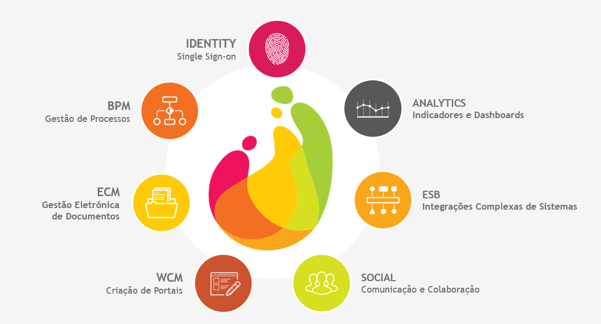

Gustavo de Souza Crispim
Início
Serviços
Portfólio
Sobre
Contato
Tecnologia
Conheça meus projetos profissionais e pessoais na área de tecnologia
Projetos de Tecnologia

Totvs Fluig
Projeto profissional.
Trabalhos acadêmicos realizados
×
Descrição:
DOCKER: Estudo comparativo de consumo de memória e processamento de uma aplicação sob estresse sendo executada em um servidor local com e sem docker
Ano:
2023
Link:
Download
GitHub
Descrição:
Trabalho de inovação para a elaboração de uma solução tecnológica para o ensino da técnica de personas, utilizando uma abordagem estruturada e centrada no usuário.
Ano:
2024
Link:
Download
Sobre mim
×
Formação acadêmica:
Universidade do Estado de Santa Catarina (UDESC)
Curso Superior de Tecnologia (CST), Tecnologia em Análise e Desenvolvimento de Sistemas [2020-2024]
EEEFM Honório Fraga
Técnico em Informática para Internet [2016-2018]
Experiência profissionais:
Para mais detalhes acesse meu perfil abaixo
[2019] Arte finalista em Gráfica (Joinville/SC)
[2020-2024] Desenvolvedor back-end Java em empresa de Software (Joinville/SC)
Gustavo de Souza Crispim